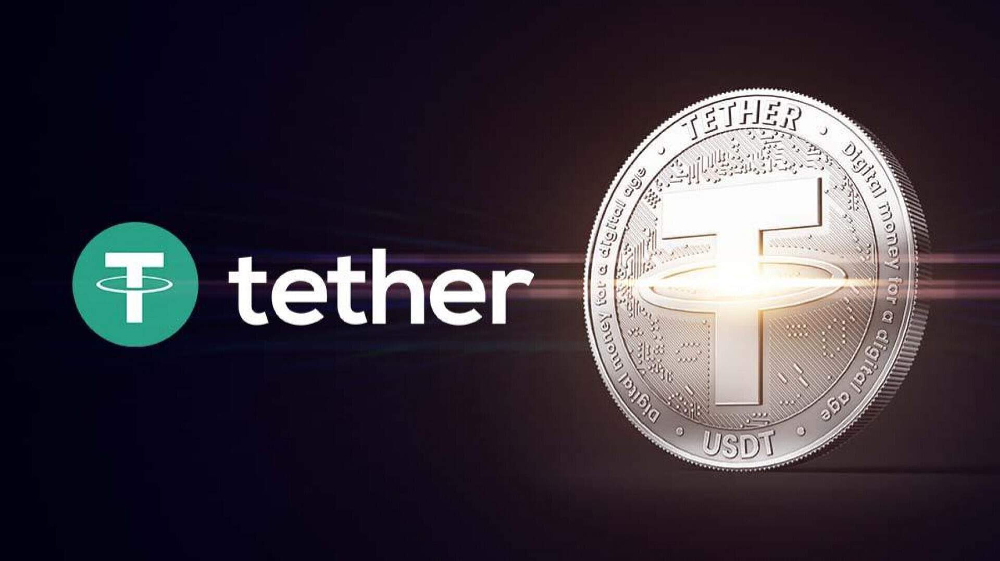

Зачем мне это нужно и какой смысл мне учить людей?
Список терминов
Майнеры Участники сети блокчейна, задействованные в процессе майнинга.
Майнинг Майнинг криптовалюты - это процесс, в ходе которого в блокчейн добавляются блоки, подтверждающие транзакции.
Бейкинг — это процесс добавления новых блоков транзакций в блокчейн Tezos.
Биткойнер - это человек, который активно занимается деятельностью, связанной с Биткойном.
и т.д.